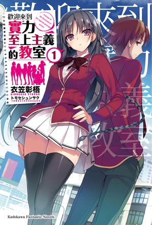

輕小說介紹
櫻花莊的寵物女孩
就讀水明藝術大學附屬高中（通称水高）的神田空太，一年級夏天時在宿舍偷養棄貓而被校長叫去問話，
並要他把貓趕走，不然就被迫搬出宿舍。身為愛貓一族的空太，因為反抗權威，結果被攆出宿舍，
流落到學生口中「惡名昭彰」的「櫻花莊」，開始了他與其他房客的生活。隔年春天，
隨著世界級天才畫家椎名真白搬進了櫻花莊，空太開始過著被這名缺乏常識的少女耍得團團轉的日子。
詳細內容
果然我的青春戀愛喜劇搞錯了
高中生比企谷八幡生性彆扭，不屈服於孤獨，沒有半個朋友，更不用提女朋友。
對那些享受著青春的同班同學，他詛咒:「他們都是現充，通通給我爆炸吧!」——這樣一個傢伙，
被導師帶去全校第一美少女雪之下雪乃加入的「侍奉社」。平凡無奇的八幡與美少女的奇妙邂逅，
然而，雪乃和八幡個性上的缺陷讓他們無法擦出愛情的火花。這是一則充滿錯誤的青春故事。
詳細內容
>
冰菓
在各個憧憬展開玫瑰色高中生活的學生之中，折木奉太郎卻是一個“灰色的節能主義者”，
認為“沒必要的事不做，不得不做的事，就盡快解決”。本應沒有興趣參加課外活動的他，
卻因為姊姊的要求而加入了其學校神山高中的「古籍研究社」。該部今年招攬到奉太郎在內的四名新社員
，包括其好友福部里志、不太親近的舊同學伊原摩耶花、以及好奇心旺盛的千反田愛瑠，
成功避過廢社危機。然而，眾人隨即捲入45年前[6]的謎團之中。當年突然被退學的社長，
留下了一本社刊《冰菓》[7]，內裡竟隱藏著一些引人落淚的訊息……隨之以後，
四人在高中的日常中觸及不同的謎題。為了滿足愛瑠的求知慾，
奉太郎不得不為遭遇的事情想出一個合理的解釋。時而久之，奉太郎的節能主義不停受到衝擊。
詳細內容

歡迎來到實力至上主義的教室
對希望的升學、就業目標有著近乎100%的達成率，全國屈指可數的名門學校·高度育成高中。
使用最新式的設備當然不用說，每月發放相當於10萬元的點數，髮型和私有物的攜帶也完全自由，
真正的樂園般的學校，但是它的真面目卻是只有優秀的人才能受到好待遇的實力至上主義學校。
因某個理由而在入學考試偷工減料的結果，主人公·綾小路清隆，
被分配到了被揶揄為次品聚集地的最底層D班。與同一個班級成績優秀但性格超麻煩的美少女·堀北鈴音，
還有由牽掛與善良構成的天使般的少女·櫛田桔梗的相遇使得狀況開始發生改變。
高人氣作家組合所贈予的，全新學院默示錄!？
詳細內容